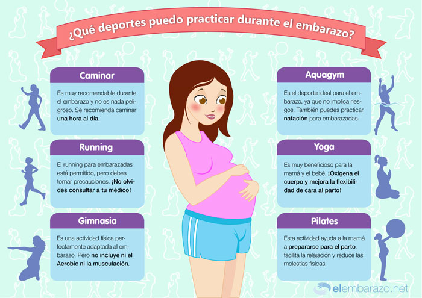
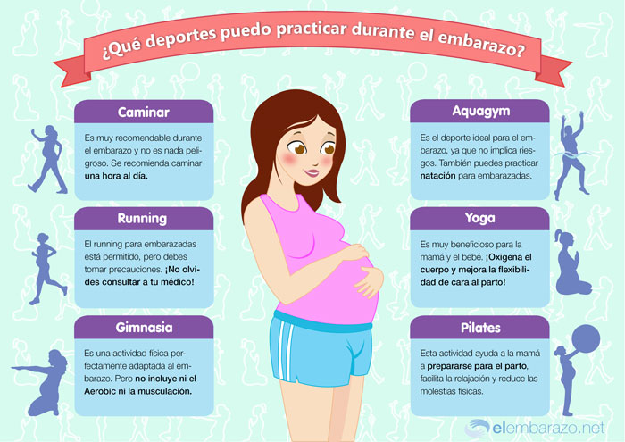

La actividad física contribuye a mejorar varios aspectos relacionados con la forma física, como la resistencia cardiorrespiratoria, la fuerza y la flexibilidad, etc., lo cual mejora la capacidad de llevar a cabo las tareas cotidianas sin fatigarse, dejando la energía suficiente para disfrutar de las actividades de ocio y para satisfacer necesidades imprevistas. El ejercicio físico practicado de forma regular no sólo es beneficioso en la prevención del sobrepeso y de la obesidad, sino que además aumenta la densidad ósea, al potenciar la formación del hueso mediante el depósito de calcio, reduce la grasa corporal y aumenta la musculatura, y reduce los factores de riesgo para enfermedades crónicas como la diabetes, las cardiopatías y algunos tipos de cáncer, ya que mejora la tolerancia a la glucosa y la sensibilidad a la insulina, normaliza los niveles de colesterol y reduce la tensión arterial. No hay que olvidar que el ejercicio físico también mejora el bienestar psicológico.
Realizar actividad física es beneficioso para las personas de todas las edades, niveles de forma y condiciones físicas:
En la infancia y la juventud el juego ha sido tradicionalmente la actividad física más común. Los juegos activos e informales son ideales porque implican la utilización de distintos grupos musculares, fomentan las relaciones sociales y, lo que es más importante, son divertidos. Sin embargo, hay otros tipos de actividades, como practicar algún deporte, correr, nadar, pasear, caminar, bailar, ir en bicicleta, hacer excursiones, etc. que son una excelente muestra de acciones sencillas que ayudan a ganar salud. En esta etapa de la vida es conveniente realizar cada día una hora de actividad física moderada, como mínimo.
La mayoría de personas adultas pueden realizar actividad física con seguridad y comodidad, incluso en épocas como el embarazo y la lactancia.
 
